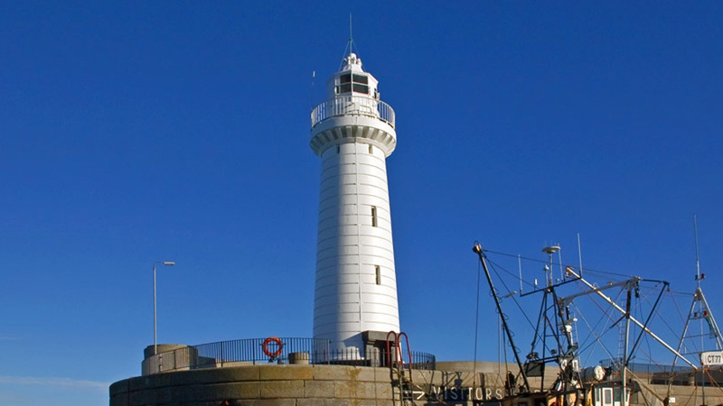

A request from sailors for a light on Rathlin Island was first made in 1827, but due to differences of opinion between the Commissioners of Northern Lights in Edinburgh and the Corporation for Improving the Port of Dublin or Ballast Board, the final approval from Trinity House was not obtained until March 1847 and construction did not start until May 1849. The buildings were designed by the Ballast Board's Inspector of Works & Inspector of Lighthouses, George Halpin, and were constructed by the Board's workmen.
Two lights, an upper occulting light and lower fixed light, so as not to be confused with other lights when approaching and passing through the North Channel, were established on 1st November 1856. The tower of the upper light is built of stone from the island and is 26.8m (88 feet) overall height. The light is 74m (243 feet) above high water, and originally had an occulting character of 50 seconds bright with 10 seconds dark. The light also showed a red sector over Carrick-a-vaan Rock, off Kenbane Head on the mainland. The lower light consisted of a lantern placed close to the base of the tower, the light was 55.5m (182 feet) above high water and showed a fixed or non flashing light.
On 18th January 1866 a fog signal was established which consisted of an 18 pounder gun and was fired every 20 minutes during fog conditions. Over the years the frequency of the detonation was increased to 15 minutes, then 8 minutes.
The lower fixed light was discontinued on 1st July 1894 and at the same time the tower light was intensified.
In 1912 a further change was made to the main light when a completely new optic was installed with a vaporised paraffin burner giving four flashes every 20 seconds.
In 1918 the fog gun was replaced by an explosive fog signal consisting of a double tonite explosion every 5 minutes.
The colour of the tower seems to have been originally natural stone with a broad red belt under the lantern balcony, then the stone was painted white (still with the red belt). This lasted until 1934 when the red belt was changed to black as it is today.
The red sector over the Carrick-a-vaan rock was discontinued in 1938.
From September 1965 the explosive fog signal was accompanied by a brilliant flash of light when sounding during hours of darkness. The explosive fog signal was finally discontinued in 1972 for security reasons along with other similar fog signals around the coast. A Radiobeacon was established five months later sending out its signal AH in Morse every six minutes. It was coupled with five other stations in the group.
Rathlin East Lighthouse was converted to electric operation in 1981 and has a 920mm catadioptric annular lens and MBI 1kW lamps in a UVLA40 lampchanger.
On the 31st March 1995 the lighthouse was converted to automatic operation and the Keepers were withdrawn from the station. The station is now in the care of an Attendant and the aids to navigation are also monitored via a telemetry link from the Lighthouse Depot in Dun Laoghaire.
Since November 1995 the light is exhibited by day to improve the daytime conspicuity of the station.
The Medium Frequency Radiobeacon service was discontinued on 1st February 1999.
In October 2003 an experimental Automatic Identification System (AIS) was established at Rathlin East Lighthouse.